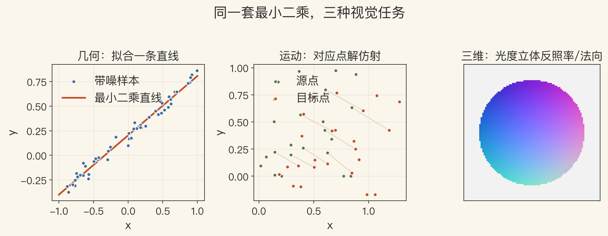
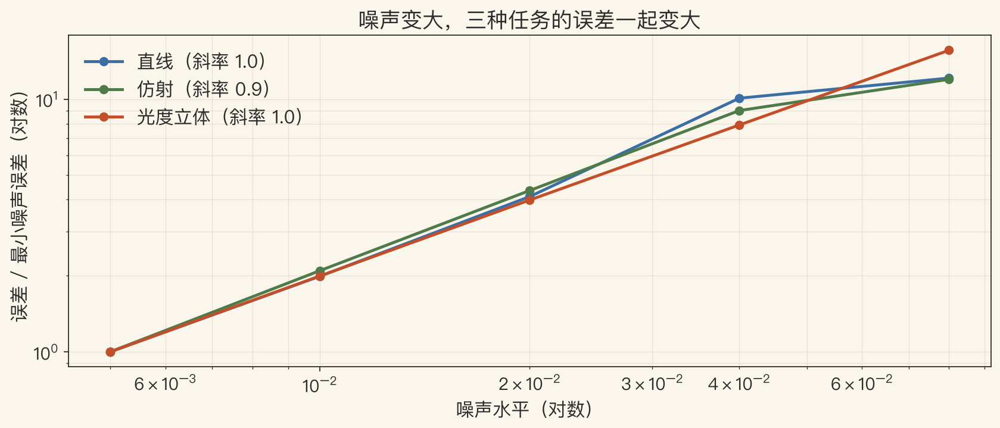
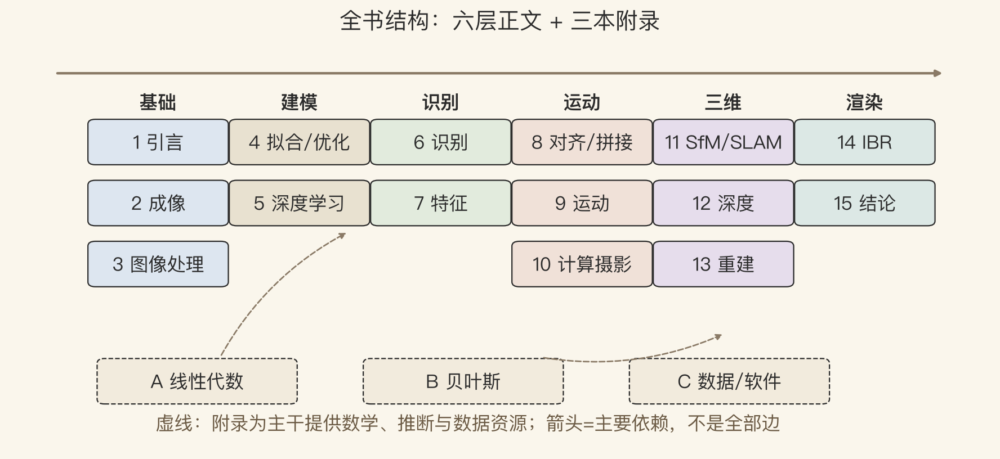

全书总复盘 · 为什么先看结构
十五章，先归成六层
- 这一集不学新算法，只把全书结构理一遍。
- 全书主题很广，但广不等于散；作者在 1.3 节给过导览图。
- 这一集只带三样：一根横轴、一根纵轴、一张六层图。
- 先有结构，再谈细节。
依据：原书第 22、915 页
今天的三样
横轴：语义 ↔ 三维
纵轴：依赖顺序
六层图：课程自己的结构
两根坐标
横看是什么，竖看先学什么
- 横轴：从语义理解到三维结构。
- 纵轴：从可以独立看，到必须依赖前面的章。
- 越往右越几何，越往下依赖越多。
- Figure 1.12 是粗略布局，不是严格课程表。
依据：原书第 22 页 Figure 1.12
怎么读系统图
先看横轴：这是什么
再看纵轴：先学什么
最后看箭头：谁依赖谁
基础 · 第 1–3 章
问题、成像、图像处理
- 第 1 章：问题有多难。
- 第 2 章：图像怎么来的——投影、光照、镜头、采样。
- 第 3 章：拿到图先怎么处理——滤波、傅里叶、金字塔、几何变换。
- 第 1 章的逆问题、第 2 章的针孔、第 3 章的卷积，是后面的共同语言。
依据：原书第 24 页
三章一句话
1 章：逆问题
2 章：成像模型
3 章：图像处理
建模 · 第 4–5 章
一层靠模型，一层靠数据
- 第 4 章：能量函数、优化、先验、鲁棒拟合、MRF。
- 第 5 章：机器学习、深度学习、CNN、Transformer、生成模型。
- 现代视觉系统常常两层一起用。
- 一个管怎么解，一个管怎么学。
依据：原书第 26 页
分工
4 章：定结构
5 章：补细节
最小二乘 / 反向传播
三个任务 · 同一套最小二乘
换个设计矩阵，还是同一个求解器
- 直线拟合：2 个参数。
- 仿射对齐：6 个参数。
- 光度立体：每个像素 3 个未知数。
- 三者都最小化预测减观测的平方和；条件数差，噪声放大。
依据：本集实验（合成玩具，不冒充真实系统）

同一套最小二乘解三个任务：几何、运动、三维形状｜程序生成，未用教材原图
理解与几何 · 第 6–7 章
识别问是什么，特征问哪里是同一点
- 第 6 章：实例识别、分类、检测、分割、视频理解、视觉语言。
- 第 7 章：Harris、SIFT、边缘、轮廓、Hough、分割。
- 第 6、7 章是一个分界：往左是理解，往右是重建。
- 特征匹配做不好，后面的 SfM、拼接、识别都会连锁失败。
依据：原书第 26–27 页
两条路
识别：这是什么
特征：哪里是同一个点
两条路都要表示和匹配
噪声怎么传下去
噪声翻倍，误差大致也翻倍
- 三条线：直线、仿射、光度立体的误差随噪声增长。
- 斜率 0.95、0.93、0.99，都接近 1。
- 最小二乘不压噪声，它把噪声原样传下去。
- 先估噪声、再看误差；模型再漂亮，也挡不住坏数据。
依据：本集实验

三种任务的误差随噪声增长：斜率都接近 1｜程序生成，未用教材原图
运动与应用 · 第 8–10 章
把基础变成产品
- 第 8 章：对齐、拼接、RANSAC、捆绑调整、全景。
- 第 9 章：稠密光流、参数运动、分层运动、视频稳像。
- 第 10 章：HDR、去噪、去模糊、超分、抠图、纹理合成。
- 手机里的全景、夜景、防抖、人像模式都在这。
依据：原书第 27–28 页
一层三章
8 章：把图对齐
9 章：让像素有运动
10 章：做成新图
全书结构
六层正文，加三本附录
- 六层：基础、建模、识别、运动、三维、渲染。
- 左边偏 2D 和语义，右边偏 3D 和几何。
- 附录 A、B 给数学和推断，附录 C 给数据和软件。
- 第 4 章给所有层提供优化，第 5 章给所有层提供学习。
依据：原书第 22–29 页 + 本集 lab

全书结构：六层正文 + 三本附录｜程序生成，未用教材原图
三维 · 第 11–13 章
相机在哪、像素多远、表面什么材质
- 第 11 章：SfM、SLAM，恢复相机运动和三维结构。
- 第 12 章：局部、全局、多视图立体、单目深度。
- 第 13 章：形状 from X、扫描、表面表示、人体/人脸建模。
- 相机矩阵、对极几何、三角化、BA、MVS、泊松、隐式表面都在这一层。
依据：原书第 28–29 页
三章三问
11 章：相机在哪
12 章：像素多远
13 章：表面什么材质
渲染与收束 · 第 14–15 章
新视角，和作者的四条方法论
- 第 14 章：视图插值、LDI、sprite、光场、环境遮罩、视频渲染、神经渲染。
- 第 15 章：工程、科学、统计、学习，四条方法论收束。
- 渲染层决定用户最后看到什么。
- 表示从纹理网格一路排到纯采样光场。
依据：原书第 29、918 页
第 14 章路线
视图插值 → 光场
视频 → 自由视点
神经渲染
附录与下一步
三本工具书，一张复习清单
- 附录 A：线性代数与数值技术。
- 附录 B：贝叶斯估计与鲁棒统计。
- 附录 C：数据集、软件、课程幻灯片。
- 视觉是在不确定性下，把像素变成可用的三维或语义描述。
依据：原书第 29 页
离开课程后常查
A：最小二乘 / 矩阵分解
B：贝叶斯 / 鲁棒统计
C：数据集 / 软件